RNA-seq-workflow.RmdBelow, I will illustrate some of the functions present in the coriell package by walking through a typical RNA-seq workflow, starting with count files generated using the STAR aligner and progressing through differential expression analysis.
The example data were generated by aligning reads from the Targeting CDK9 Reactivates Epigenetically Silenced Genes in Cancer paper by Dr. Issa’s lab to the hg38 genome using STAR. For brevity, only the day 4 DMSO and HH1 10uM samples have been included. The complete raw data can be found on GEO.
The output from STAR is a tab delimited file with columns containing the gene name, unstranded count, forward stranded count, and reverse stranded count.
dir <- system.file("extdata", package = "coriell") files <- list.files(dir, full.names = TRUE, pattern = "*.ReadsPerGene.out.tab") files #> [1] "/tmp/RtmpYC9mD7/temp_libpath1b5ea7f7a3ecf/coriell/extdata/DMSO_4day_1_S1.ReadsPerGene.out.tab" #> [2] "/tmp/RtmpYC9mD7/temp_libpath1b5ea7f7a3ecf/coriell/extdata/DMSO_4day_2_S2.ReadsPerGene.out.tab" #> [3] "/tmp/RtmpYC9mD7/temp_libpath1b5ea7f7a3ecf/coriell/extdata/DMSO_4day_3_S3.ReadsPerGene.out.tab" #> [4] "/tmp/RtmpYC9mD7/temp_libpath1b5ea7f7a3ecf/coriell/extdata/HH1_10uM_4day_1_S4.ReadsPerGene.out.tab" #> [5] "/tmp/RtmpYC9mD7/temp_libpath1b5ea7f7a3ecf/coriell/extdata/HH1_10uM_4day_2_S5.ReadsPerGene.out.tab" #> [6] "/tmp/RtmpYC9mD7/temp_libpath1b5ea7f7a3ecf/coriell/extdata/HH1_10uM_4day_3_S1.ReadsPerGene.out.tab"
Read the files into a single dataframe with vroom. Since the sequencing prep was an Illumina Truseq kit we want to select the unstranded counts for our analysis.
count_df <- vroom::vroom(files, id = "fpath", delim = "\t", col_names = c("gene", "unstranded", "forward", "reverse") ) #> Rows: 364,122 #> Columns: 5 #> Delimiter: "\t" #> chr [1]: gene #> dbl [3]: unstranded, forward, reverse #> #> Use `spec()` to retrieve the guessed column specification #> Pass a specification to the `col_types` argument to quiet this message head(count_df) #> # A tibble: 6 x 5 #> fpath gene unstranded forward reverse #> <chr> <chr> <dbl> <dbl> <dbl> #> 1 /tmp/RtmpYC9mD7/temp_libpath1b5ea7f7a3e… N_unmapped 418254 4.18e5 418254 #> 2 /tmp/RtmpYC9mD7/temp_libpath1b5ea7f7a3e… N_multima… 5553623 5.55e6 5553623 #> 3 /tmp/RtmpYC9mD7/temp_libpath1b5ea7f7a3e… N_noFeatu… 1296232 1.42e7 1360388 #> 4 /tmp/RtmpYC9mD7/temp_libpath1b5ea7f7a3e… N_ambiguo… 1828686 1.39e4 1312715 #> 5 /tmp/RtmpYC9mD7/temp_libpath1b5ea7f7a3e… ENSG00000… 0 0. 0 #> 6 /tmp/RtmpYC9mD7/temp_libpath1b5ea7f7a3e… ENSG00000… 0 0. 0
We can now clean up the dataframe by extracting the sample names from the fpath column, removing the gene rows that begin with “N_”, and selecting the unstranded counts. To make the resulting dataset a little smaller we can also filter out rows with zero counts.
Note the use of the %<>% pipe below which reassigns the results of filtering to the count_df variable
library(tidyverse) library(magrittr) library(tools) count_df %<>% mutate( sample_name = file_path_sans_ext(basename(fpath)), sample_name = str_remove(sample_name, "_S[0-9].ReadsPerGene.out") ) %>% filter(!str_detect(gene, "^N_")) %>% select(gene, sample_name, unstranded) %>% filter(unstranded > 0) head(count_df) #> # A tibble: 6 x 3 #> gene sample_name unstranded #> <chr> <chr> <dbl> #> 1 ENSG00000268903 DMSO_4day_1 3 #> 2 ENSG00000241860 DMSO_4day_1 1 #> 3 ENSG00000279457 DMSO_4day_1 21 #> 4 ENSG00000237094 DMSO_4day_1 4 #> 5 ENSG00000230021 DMSO_4day_1 1 #> 6 ENSG00000225630 DMSO_4day_1 13
All software dealing with RNA-seq data expects the data to be in the shape where columns represent samples and rows represent genes. To acheive this we will pivot the count_df wider into a count matrix. Additionally, we will turn the gene column into rownames.
count_mat <- count_df %>% pivot_wider( names_from = sample_name, values_from = unstranded, values_fill = 0 ) %>% column_to_rownames(var = "gene") head(count_mat) #> DMSO_4day_1 DMSO_4day_2 DMSO_4day_3 HH1_10uM_4day_1 #> ENSG00000268903 3 5 8 6 #> ENSG00000241860 1 3 5 8 #> ENSG00000279457 21 32 46 24 #> ENSG00000237094 4 7 9 6 #> ENSG00000230021 1 1 1 2 #> ENSG00000225630 13 9 21 25 #> HH1_10uM_4day_2 HH1_10uM_4day_3 #> ENSG00000268903 2 5 #> ENSG00000241860 9 15 #> ENSG00000279457 50 47 #> ENSG00000237094 11 17 #> ENSG00000230021 3 1 #> ENSG00000225630 45 47
We can either read in metadata about our samples from a file that we created externally or we can create sample metadata from the sample names themselves. Below, we will create sample metadata from the colnames of the count_mat.
Since there is only one time point present we will ignore extracting the time from the sample name and simply compare the two treatment groups.
sample_df <- colnames(count_mat) %>% enframe(name = NULL, value = "sample_name") %>% mutate( group = if_else(str_detect(sample_name, "DMSO"), "DMSO", "HH1_10uM"), group = factor(group, levels = c("DMSO", "HH1_10uM")) ) %>% column_to_rownames(var = "sample_name") # it is important that the colnames of the count_mat match the rownames of samples_df all(colnames(count_mat) == rownames(sample_df)) #> [1] TRUE head(sample_df) #> group #> DMSO_4day_1 DMSO #> DMSO_4day_2 DMSO #> DMSO_4day_3 DMSO #> HH1_10uM_4day_1 HH1_10uM #> HH1_10uM_4day_2 HH1_10uM #> HH1_10uM_4day_3 HH1_10uM
This step is not strictly necessary but it can be useful to read in information about the genes. For example, since the genes in the count matrix have Ensembl IDs we might want to know their gene symbol or we might want to calculate RPKMs in which case we would need information about gene lengths.
These samples were aligned to the Ensembl hg38.100 build using the matching GTF file. Therefore, we can use this GTF file to annotate our genes. We will use rtracklayer to import the GTF file we download from the Ensembl FTP server. rtracklayer imports the file as a GRanges object so we will coerce it to a dataframe so we can filter.
# get the GTF file from Ensembl url <- "ftp://ftp.ensembl.org/pub/release-100/gtf/homo_sapiens/Homo_sapiens.GRCh38.100.gtf.gz" gtf_file <- "~/Downloads/Homo_sapiens.GRCh38.100.gtf.gz" # if the file isn't in the Downloads folder, download it if (!file.exists(gtf_file)) download.file(url, gtf_file) # load the gtf file as a dataframe gtf_df <- as.data.frame(rtracklayer::import(gtf_file)) head(gtf_df) #> seqnames start end width strand source type score phase #> 1 1 11869 14409 2541 + havana gene NA NA #> 2 1 11869 14409 2541 + havana transcript NA NA #> 3 1 11869 12227 359 + havana exon NA NA #> 4 1 12613 12721 109 + havana exon NA NA #> 5 1 13221 14409 1189 + havana exon NA NA #> 6 1 12010 13670 1661 + havana transcript NA NA #> gene_id gene_version gene_name gene_source #> 1 ENSG00000223972 5 DDX11L1 havana #> 2 ENSG00000223972 5 DDX11L1 havana #> 3 ENSG00000223972 5 DDX11L1 havana #> 4 ENSG00000223972 5 DDX11L1 havana #> 5 ENSG00000223972 5 DDX11L1 havana #> 6 ENSG00000223972 5 DDX11L1 havana #> gene_biotype transcript_id transcript_version #> 1 transcribed_unprocessed_pseudogene <NA> <NA> #> 2 transcribed_unprocessed_pseudogene ENST00000456328 2 #> 3 transcribed_unprocessed_pseudogene ENST00000456328 2 #> 4 transcribed_unprocessed_pseudogene ENST00000456328 2 #> 5 transcribed_unprocessed_pseudogene ENST00000456328 2 #> 6 transcribed_unprocessed_pseudogene ENST00000450305 2 #> transcript_name transcript_source transcript_biotype tag #> 1 <NA> <NA> <NA> <NA> #> 2 DDX11L1-202 havana processed_transcript basic #> 3 DDX11L1-202 havana processed_transcript basic #> 4 DDX11L1-202 havana processed_transcript basic #> 5 DDX11L1-202 havana processed_transcript basic #> 6 DDX11L1-201 havana transcribed_unprocessed_pseudogene basic #> transcript_support_level exon_number exon_id exon_version protein_id #> 1 <NA> <NA> <NA> <NA> <NA> #> 2 1 <NA> <NA> <NA> <NA> #> 3 1 1 ENSE00002234944 1 <NA> #> 4 1 2 ENSE00003582793 1 <NA> #> 5 1 3 ENSE00002312635 1 <NA> #> 6 NA <NA> <NA> <NA> <NA> #> protein_version ccds_id #> 1 <NA> <NA> #> 2 <NA> <NA> #> 3 <NA> <NA> #> 4 <NA> <NA> #> 5 <NA> <NA> #> 6 <NA> <NA>
Next, we will filter the gtf_df to include only the Ensembl IDs present in our count_mat. We can left_join the GTF information from genes onto our gene_ids and then select only relevant columns.
gene_df <- rownames(count_mat) %>% enframe(name = NULL, value = "gene_id") %>% left_join(y = { gtf_df %>% filter(type == "gene") }, by = "gene_id") %>% select(gene_id, chr = seqnames, start, end, length = width, strand, gene_name, gene_biotype ) %>% column_to_rownames(var = "gene_id") # check to see if rownames of gene_df match those of count_mat all(rownames(count_mat) == rownames(gene_df)) #> [1] TRUE head(gene_df) #> chr start end length strand gene_name #> ENSG00000268903 1 135141 135895 755 - AL627309.6 #> ENSG00000241860 1 141474 173862 32389 - AL627309.5 #> ENSG00000279457 1 185217 195411 10195 - WASH9P #> ENSG00000237094 1 365389 522928 157540 - AL732372.2 #> ENSG00000230021 1 586071 827796 241726 - AL669831.3 #> ENSG00000225630 1 629640 630683 1044 + MTND2P28 #> gene_biotype #> ENSG00000268903 processed_pseudogene #> ENSG00000241860 lncRNA #> ENSG00000279457 unprocessed_pseudogene #> ENSG00000237094 transcribed_unprocessed_pseudogene #> ENSG00000230021 transcribed_processed_pseudogene #> ENSG00000225630 unprocessed_pseudogene
We can now load our data into edgeR and start our analysis. NOTE the naming of some of the variable names above was deliberate. edgeR expects groups to be named ‘group’ as a column in your sample annotation, otherwise you must specify group names in edgeR functions. Likewise, in the gene annotation edgeR looks for a column named ‘length’ to calculate RPKMs. You don’t have to name your columns with these conventions however it makes working with edgeR a little easier.
Since we’re only comparing two groups the design is straightforward. We can specify the design matrix by either setting an intercept to be the first factor level design <- model.matrix(~sample_df$group) or by setting each group as a column in the resulting design matrix and using contrasts to make comparisons. I am a fan of setting up contrasts because they are generally easier to understand and are easier to expand upon if the experimental design gets more complicated.
design <- model.matrix(~0 + sample_df$group) rownames(design) <- rownames(sample_df) colnames(design) <- levels(sample_df$group) design #> DMSO HH1_10uM #> DMSO_4day_1 1 0 #> DMSO_4day_2 1 0 #> DMSO_4day_3 1 0 #> HH1_10uM_4day_1 0 1 #> HH1_10uM_4day_2 0 1 #> HH1_10uM_4day_3 0 1 #> attr(,"assign") #> [1] 1 1 #> attr(,"contrasts") #> attr(,"contrasts")$`sample_df$group` #> [1] "contr.treatment"
Since a gene has to be transcribed a certain number of times to really be expressed we want to filter out genes that are lowly expressed. edgeR accomplishes this with the filterByExpr function.
keep <- filterByExpr(y, design = design) y <- y[keep, ] table(keep) #> keep #> FALSE TRUE #> 21679 16841
edgeR uses TMM to calculate normalization factors. These norm factors are then used in downstream analysis to normalize the gene counts within and between samples.
y <- calcNormFactors(y, method = "TMM")
We can check the normalization by creating an MD plot for each sample vs the expression levels in all other samples. edgeR has a function plotMD for this purpose. We can wrap this function in another caller and map it across all of our samples to easily check the entire dataset.
The bulk of the data should be zero-centered and generally horizontal across. Since this is only a subset of the entire dataset it is not surprising that there is some skew in the normalization.
plot_meanDifference <- function(col) { plotMD(cpm(y, log = TRUE), column = col) abline(h = 0, col = "red", lty = 2, lwd = 2) } # apply plot func to all columns walk(1:ncol(y$counts), plot_meanDifference)
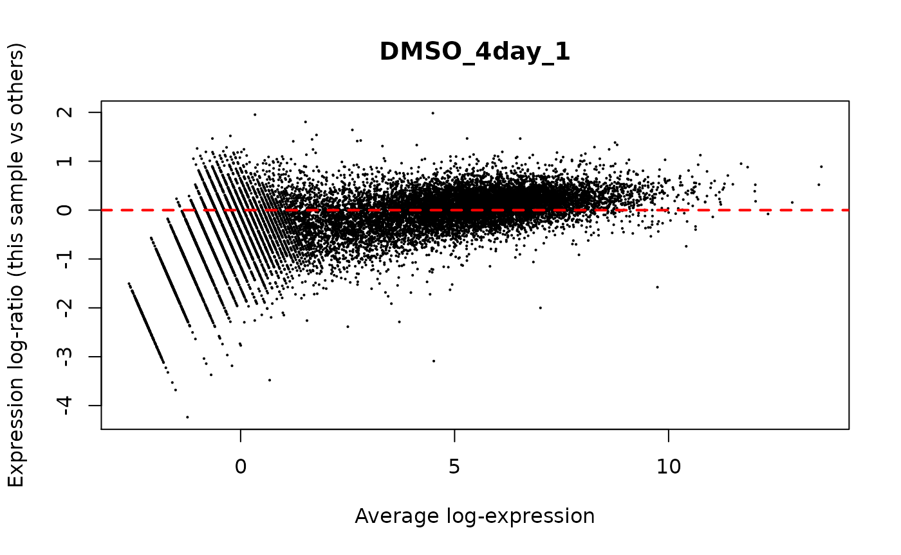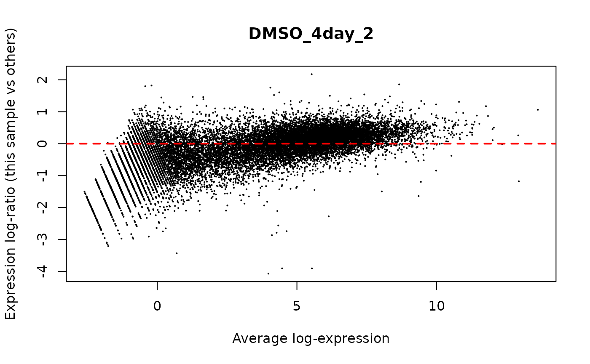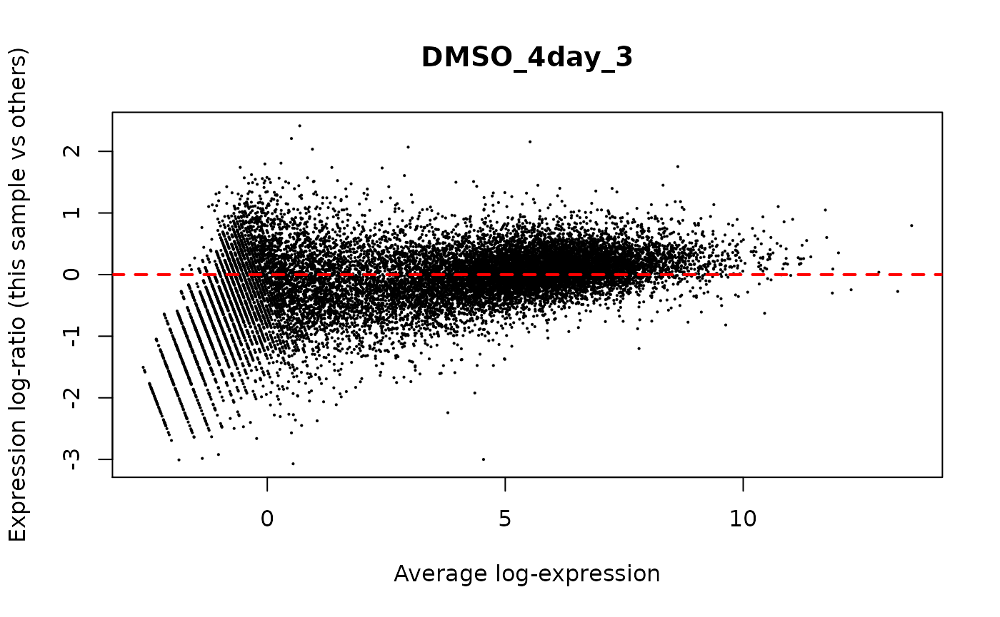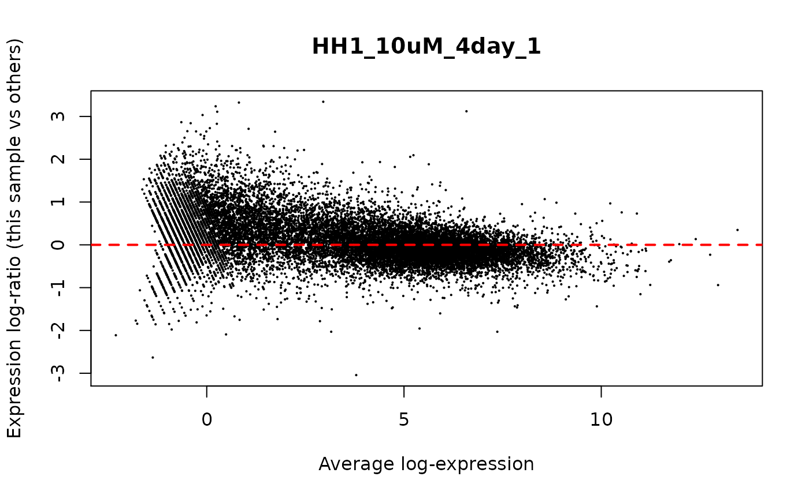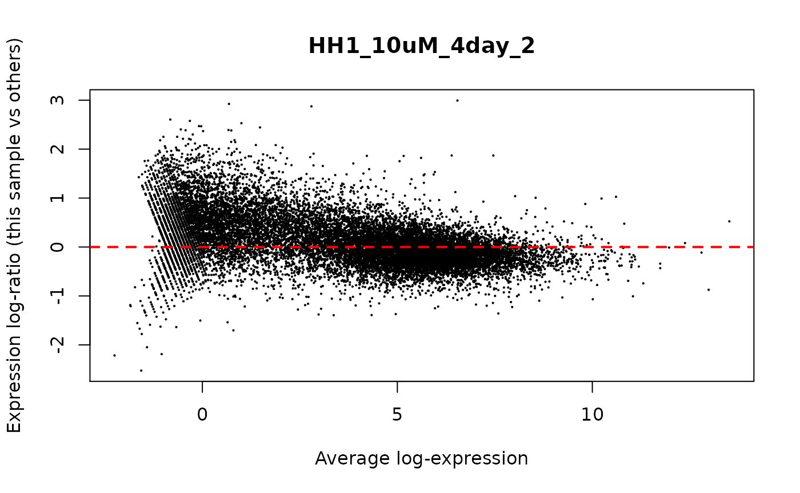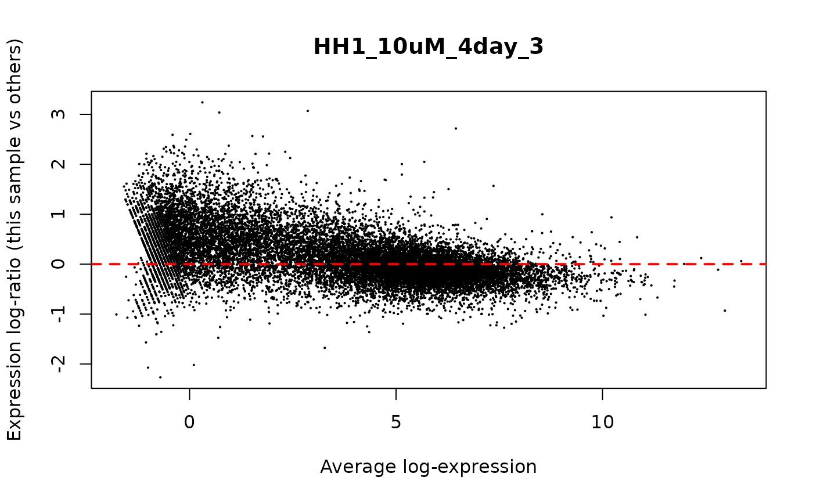
Next we estimate the dispersion. The dispersion values are critical for estimating DE. You need at least two replicates in a single group to calculate dispersions. Of course, however, more groups and more replicates (at least triplicates) will improve the analysis.
y <- estimateDisp(y, design, robust = TRUE)
We can plot the dispersion estimates below. edgeR calculates dispersion in three ways which may or may not be used depending on the DE test you choose. The tagwise dispersion is the dispersion for any individual gene. The trended dispersion is a smoothed dispersion estimate for genes of a given expression level and the common dispersion is essentially an estimate of the mean dispersion of all genes.
It is typical to see dispersions higher and more variable for lower expressed genes and then asymptotically get closer to zero as expression increases.
plotBCV(y)
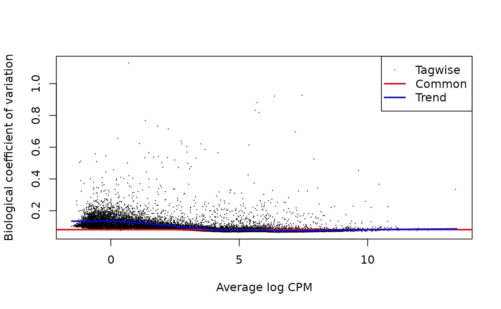
Depending on the test to be used you will typically need to fit a model to the data. edgeR does this with the glmQLFit framework. Running this function fits a model to the expression data that can then be used downstream in DE testing.
fit <- glmQLFit(y, design, robust = TRUE)
The glmQLFit function is similar to glmFit but uses squeezeVar from limma to conduct empirical Bayes moderation of the genewise QL dispersions. These squeezed estimates help to provide better estimates in the final DE test. We can view the fitted estimates with the plotQLDisp function.
plotQLDisp(fit)
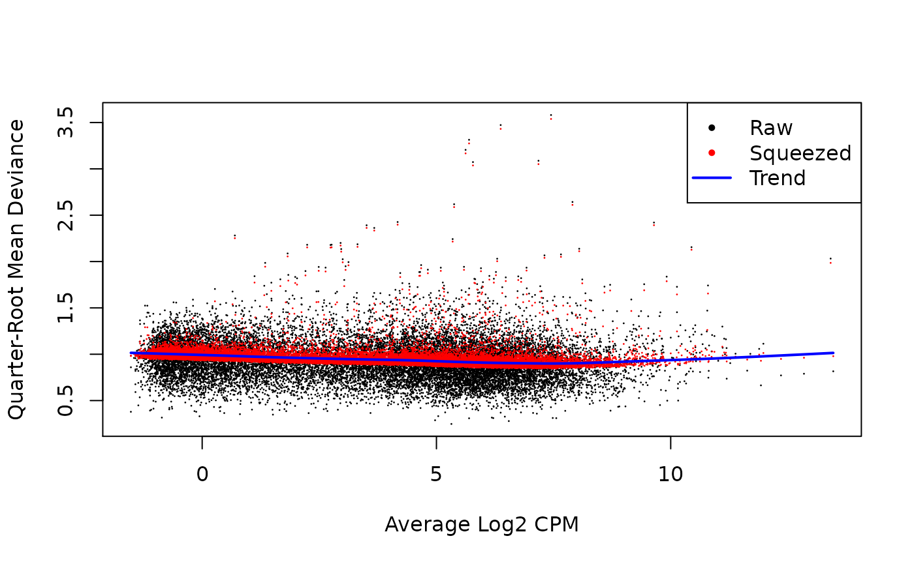
We can now use the design matrix to select the columns we want to compare. Below we are looking for the differential gene expression in HH1_10uM vs DMSO. Positive logFCs in the results indicate that a gene is up-regulated in HH1_10uM whereas negative values for the logFC indicate the gene was down-regulated in HH1_10uM.
con <- makeContrasts(hh1_vs_dmso = HH1_10uM - DMSO, levels = design)
Below, we will use the glmTreat function to test for DE relative to a logFC cutoff. Moderate values for the lfc parameter in the glmTreat function typically reflect testing for a roughly 2 fold-change. This method is better than performing a LRT or exactTest and then filtering for FDR and logFCs.
This is also the moment where the coriell functions become helpful. We will now attach the coriell package and start using some of the functions.
library(coriell) res <- glmTreat(fit, contrast = con[, "hh1_vs_dmso"], lfc = log2(1.2)) # convert the edger result to a dataframe res_df <- edger_to_df(res) head(res_df) #> # A tibble: 6 x 13 #> feature_id chr start end length strand gene_name gene_biotype logFC #> <chr> <fct> <int> <int> <int> <fct> <chr> <chr> <dbl> #> 1 ENSG00000… 1 1.46e8 1.46e8 4145 - TXNIP protein_cod… 4.91 #> 2 ENSG00000… 3 4.86e7 4.86e7 31195 - COL7A1 protein_cod… 3.22 #> 3 ENSG00000… 12 5.37e7 5.37e7 19229 - CALCOCO1 protein_cod… 2.43 #> 4 ENSG00000… 9 1.15e8 1.15e8 98683 - TNC protein_cod… 3.23 #> 5 ENSG00000… 17 1.97e7 1.97e7 10960 - ALDH3A1 protein_cod… 2.36 #> 6 ENSG00000… 11 6.39e6 6.39e6 4559 + SMPD1 protein_cod… 2.80 #> # … with 4 more variables: unshrunk.logFC <dbl>, logCPM <dbl>, PValue <dbl>, #> # FDR <dbl>
We can now use some of the coriell functions to create plots. For example, we can use the plot_volcano function to create a volcano plot of the results. The plot_volcano function automatically summarizes and annotates the plot with the counts of the up and down regulated genes. The plot_volcano and the plot_md functions both return ggplot objects so you can always modify them, for example to add a title.
The plotting functions also have options to adjust the positioning of the labels or remove them entirely. The plot functions can also be used the label the genes using ggrepel. Use ?plot_volcano and ?plot_md to see all of the functionality.
# summarize the results into a nice table summarize_dge(res_df, fdr = 0.1, lfc = log2(1.2)) #> # A tibble: 3 x 3 #> dge n perc #> <fct> <int> <dbl> #> 1 up 4857 28.8 #> 2 down 3845 22.8 #> 3 non-dge 8139 48.3 # create a volcano plot plot_volcano(res_df, fdr = 0.1, lfc = log2(1.2)) + ggtitle("HH1 vs DMSO at 4 Days")
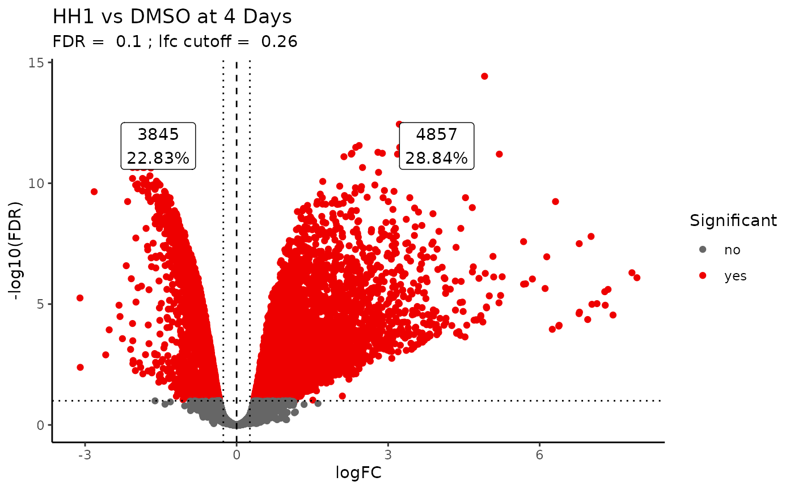
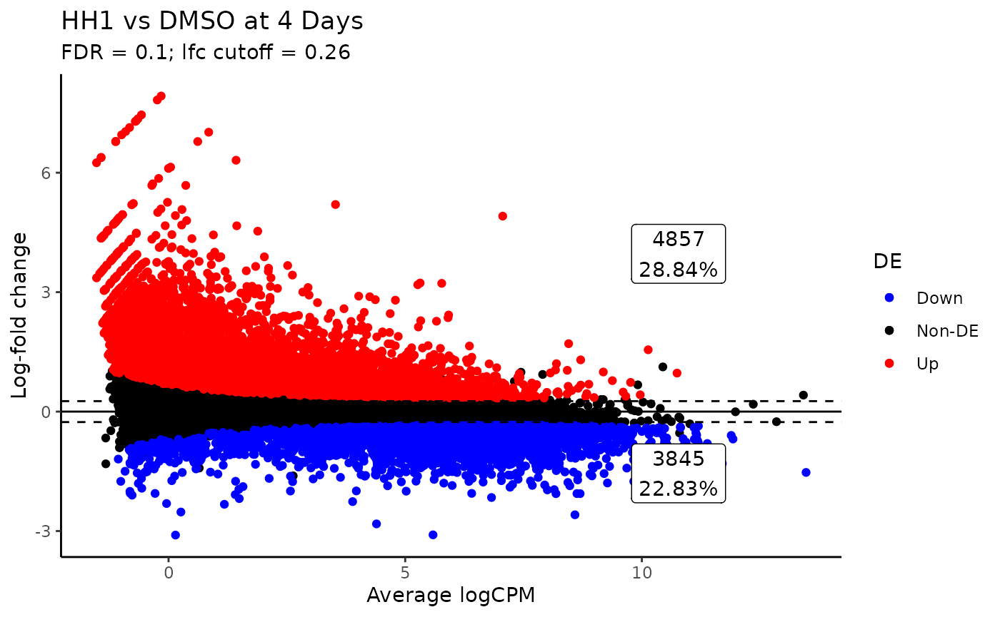
Another useful way of looking at expression data is to compare gene expression on a heatmap. The coriell::quickmap function provides a wrapper around pheatmap with some defaults that are useful for RNA-seq data. Any parameter that pheatmap accepts can be passed into the quickmap function as well.
# calculate the logCPMs with edger lcpms <- cpm(y, log = TRUE, prior.count = 5) # plot the heatmap with quickmap quickmap(lcpms, main = "All Genes")
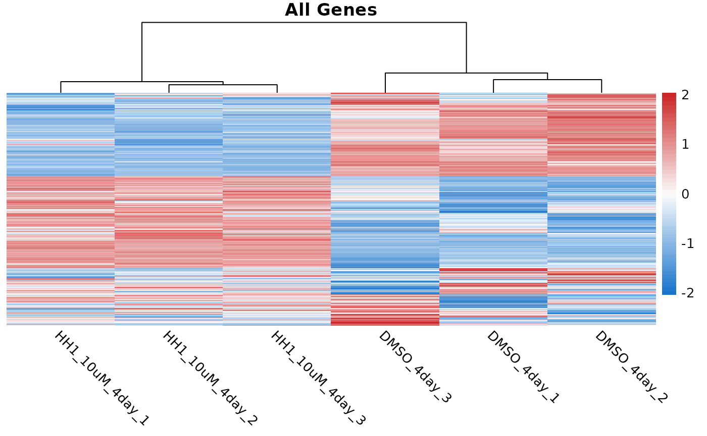
# plotting only significant genes sig_genes <- res_df %>% filter(FDR < 0.1) %>% pull(feature_id) # subset the lcpms matrix to include only genes found to be DE sig_lcpms <- subset(lcpms, rownames(lcpms) %in% sig_genes) quickmap(sig_lcpms, main = "Significant Genes")
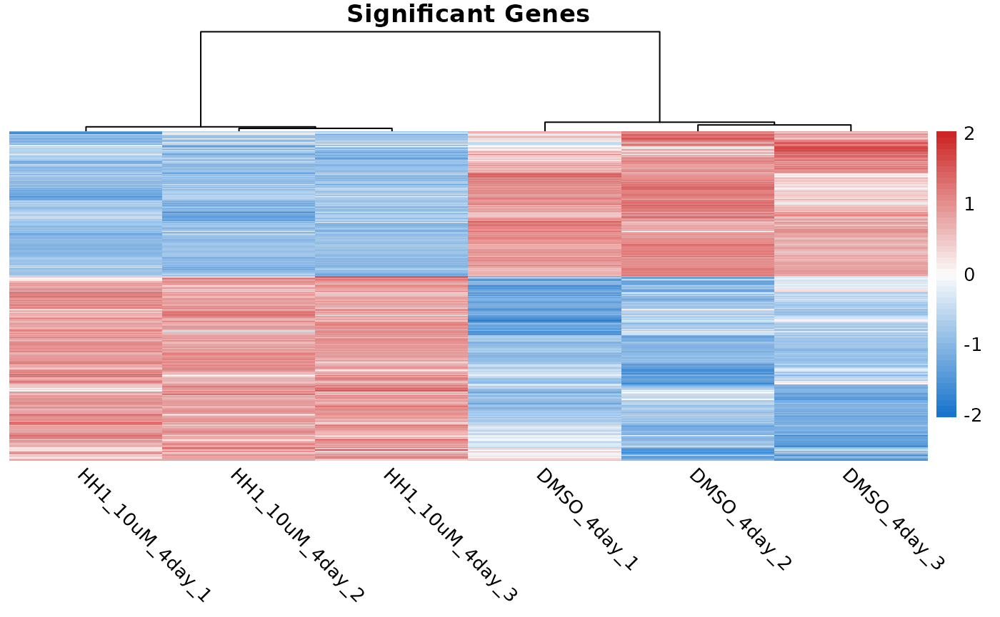
Another common task is to perform gene ontology on the differentially expressed genes. coriell::panther_go provides a function that takes in a list of gene ids and submits a request to the PANTHER db for GO analysis. It then returns the parsed json results as a tibble.
The panther_go function accepts any gene id that PANTHER accepts. The only arguments that must be provided are the list of genes, the taxon id, and the GO terms you want to search for. For a complete listing of the options see ?coriell::panther_go
# extract the top 100 up-regulated ensembl ids up_ids <- res_df %>% filter(FDR < 0.1 & logFC > 0) %>% slice_max(n = 100, order_by = abs(logFC)) %>% pull(feature_id) # extract the top 100 down-regulated ensembl gene ids down_ids <- res_df %>% filter(FDR < 0.1 & logFC < 0) %>% slice_max(n = 100, order_by = abs(logFC)) %>% pull(feature_id) # perform GO analysis with PANTHER on up-genes panther_up <- panther_go(up_ids, "9606", "biological_process") # perform GO analysis with PANTHER on down-genes panther_down <- panther_go(down_ids, "9606", "biological_process") head(panther_up$table) #> # A tibble: 6 x 10 #> result_number number_in_list fold_enrichment fdr expected number_in_refer… #> <chr> <int> <dbl> <dbl> <dbl> <int> #> 1 1 10 8.55 0.00471 1.17 364 #> 2 2 9 7.72 0.0221 1.17 363 #> 3 3 2 207. 0.531 0.00964 3 #> 4 4 2 207. 0.398 0.00964 3 #> 5 5 43 1.57 0.482 27.4 8527 #> 6 6 8 5.21 0.416 1.54 478 #> # … with 4 more variables: pValue <dbl>, plus_minus <chr>, GO_term <chr>, #> # description <chr> head(panther_down$table) #> # A tibble: 6 x 10 #> result_number number_in_list fold_enrichment fdr expected number_in_refer… #> <chr> <int> <dbl> <dbl> <dbl> <int> #> 1 1 12 16.7 2.09e-7 0.718 192 #> 2 2 10 23.0 3.08e-7 0.434 116 #> 3 3 13 11.2 1.01e-6 1.16 309 #> 4 4 10 18.2 1.36e-6 0.550 147 #> 5 5 11 14.5 1.34e-6 0.759 203 #> 6 6 10 17.0 1.66e-6 0.587 157 #> # … with 4 more variables: pValue <dbl>, plus_minus <chr>, GO_term <chr>, #> # description <chr>
The function can also work with the gene names.
up_genes <- res_df %>% filter(FDR < 0.1 & logFC > 0) %>% slice_max(n = 100, order_by = abs(logFC)) %>% distinct(gene_name) %>% pull(gene_name) panther_up2 <- panther_go(up_genes, "9606", "biological_process") head(panther_up2$table) #> # A tibble: 6 x 10 #> result_number number_in_list fold_enrichment fdr expected number_in_refer… #> <chr> <int> <dbl> <dbl> <dbl> <int> #> 1 1 10 7.25 0.0225 1.38 364 #> 2 2 9 6.54 0.0877 1.38 363 #> 3 3 50 1.55 0.407 32.3 8527 #> 4 4 2 176. 0.554 0.0114 3 #> 5 5 2 176. 0.443 0.0114 3 #> 6 6 35 1.74 1 20.1 5301 #> # … with 4 more variables: pValue <dbl>, plus_minus <chr>, GO_term <chr>, #> # description <chr>